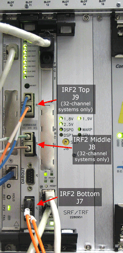
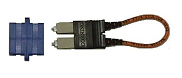

- 00000018WIA309C2E20GYZ
- id_131071364.0
- Mar 23, 2020 2:38:20 PM
RRF Fiber Optic Manual Loopback
Diagnostic Link
Diagnostics >> RRF Chassis >> RRF Fiber Optic Manual Loopback Diag
Purpose
This diagnostic tests the fiber optic cables that connect the MGD chassis to the RRF chassis. These cables have fine glass fibers in a soft vinyl jacket. They can be easily damaged if pinched, stepped on, stretched, or bent at a sharp angle.
An 8-channel system will have one fiber cable connecting the IRF_IO board to the RFDIF in the RRF chassis. A 16-channel system will have two fiber cables and the second cable will attach to the “Bottom” connector on the IRF2 board (see Figure 1).
A 32-channel system will have four cables and cables 2-4 will attach to the IRF2 board.
There are two types of IRF2 boards - an 8-16 channel version with one fiber connector (J7) and an 8-32 channel version with three fiber connectors (J9, J8, and J7). On the 32-channel version, the fiber cables for channels 9-32 can be plugged in to any IRF2 connector.

| Notice | |
|---|---|
Components Tested
-
IRF
-
IRF I/O
-
RRF Fiber Cables
Requirements
-
IRF
-
IRF I/O
-
RRF Fiber Cables
-
Fiber cable loopback adaptor
Block Diagram

Test Sequence
-
Disconnect a fiber optic cable from the RF-DIF board in the RRF chassis and install a fiber loopback adapter. Only one fiber optic cable can be tested at a time.
-
Connect the fiber being tested to the MGD chassis at one end and connect the other end of the cable to the fiber loopback adapter.
-
In the Common Service Desktop, select the fiber you have connected the loopback adapter to
-
IRF_IO (back of MGD chassis)
-
IRF2 Top (front of MGD chassis)
-
IRF2 Middle (front of MGD chassis)
-
IRF2 Bottom (front of MGD chassis)
-
-
Click Run Test.
-
When finished with each test, re-connect all cables.
-
Click Restore Normal RRF Link.
None
Expected Results
The APS board will put the IRF2 board into a diagnostic mode and send a sequence of test data out through the selected fiber cable. If the cable is OK, the test data should return to the IRF board. The APS will then compare the data sent to the data that came back.
The diagnostic will return PASS or FAIL.
Etcetera
None
Links
IRF Help Page: /csd/mr_csd/serviceDesktop/docs/cclass/irf_board/irf_board.htm
IRF I/O Help Page: /csd/mr_csd/serviceDesktop/docs/cclass/irf_io_board/irf_io_board.htm